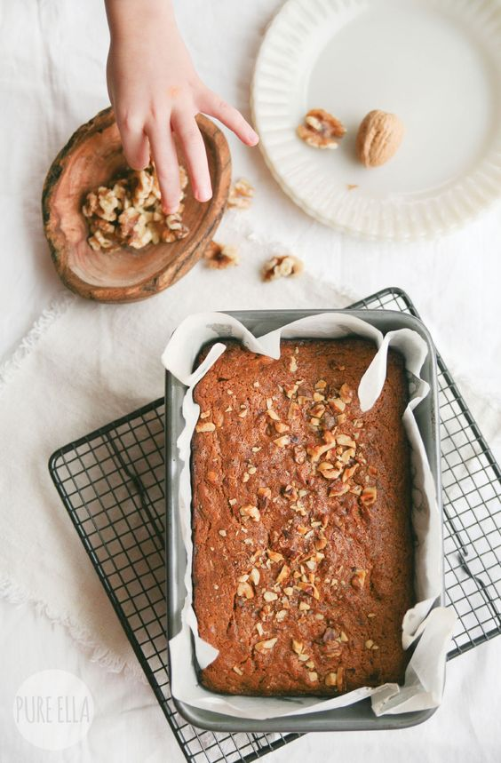

ABOUT
Bakeaholic is a female-established and drove startup that makes baking fun, customized, and reasonable for people who are vegan. Bakeaholic is the just multi-brand, customized Vegan bakery membership box. Every month, we match Bakeaholic consumers across the U.S. with delightful vegan pâtisserie that we're certain they'll cherish. You can also explore vegan recepies through our Vegan Newsletter.

Careers

Do you cherish Baking? Need to be an individual from a collective Dream Bakeaholic group? Bakeaholic is looking to recruit inspired, energetic, and inquisitive colleagues. Our group assists with making us an invigorating, imaginative, and effective development stage fire up. Every part is an immediate piece of forming and building the business. We think sharing tea is a major human advancement need; it changes how we feel, associates us, and gives us shared view.
CONTACT US